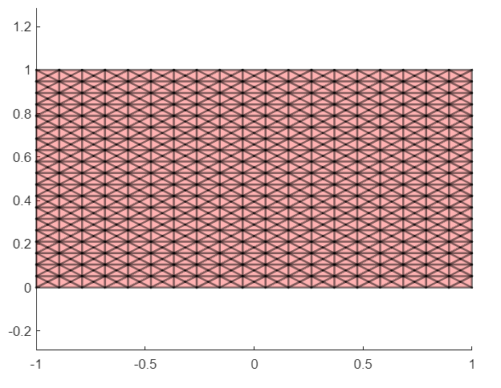
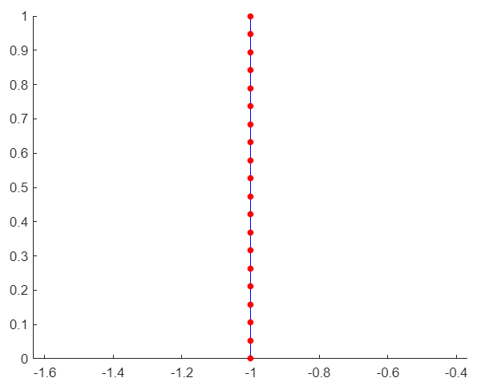
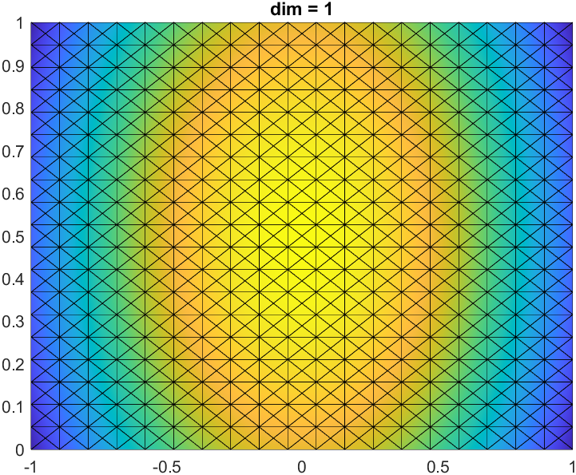
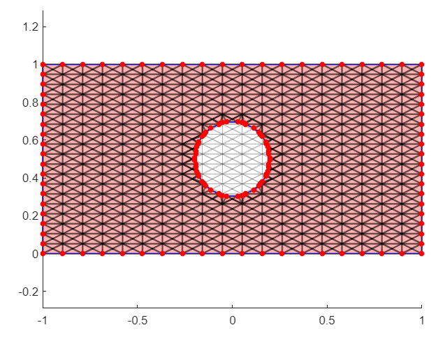

Introduction
In these tutorial files, you will learn how to use the various modules of Swan in order to generate your own FEM and Topology Optimization simulations. In each tutorial, a single building block will be analyzed, with some examples to make it easier. If you have any questions, feel free to create a new issue in the GitHub repository.
In this tutorial, we will learn how to create Level Set functions, plot them and export them in the .stl format.
Running
Meshes
The first step is to create a mesh. As previously discussed, this can be done using external software (eg. GiD) or via code. Let's use the latter case as an example:
close all;
x1 = linspace(-1,1,20);
x2 = linspace(0,1,20);
[xv,yv] = meshgrid(x1,x2);
[F,V] = mesh2tri(xv,yv,zeros(size(xv)),'x');
sBg.coord = V(:,1:2);
sBg.connec = F;
bgMesh = Mesh(sBg);
figure
bgMesh.plot()

This will act as the base background mesh, upon which the level set function will live. Next, we will create the boundary mesh of this background mesh:
sBd.backgroundMesh = bgMesh;
sBd.dimension = 1:3;
sBd.type = 'FromReactangularBox';
bMc = BoundaryMeshCreator.create(sBd);
bdMesh = bMc.create();
The resulting bdMesh is made up of 4 different boundary meshes, one for each of the edges of the original background mesh. For example, let's visualize the first of these meshes.
figure
bdMesh{1}.mesh.plot()

It is a one-dimensional edge mesh, which corresponds to the left-most part of the mesh.
Level-set function
Let's set aside these boundary meshes and go back to the background mesh, where the level-set function will lay. We can create this function using the following code:
sLS.type = 'circleInclusion';
sLS.mesh = bgMesh;
sLS.ndim = 2;
sLS.fracRadius = 0.4;
sLS.coord = bgMesh.coord;
ls = LevelSetCreator.create(sLS);
levelSet = ls.getValue();

Unfitted Mesh
Having generated both meshes and the level set function, the Unfitted Mesh can now be generated
sUm.boundaryMesh = bdMesh;
sUm.backgroundMesh = bgMesh;
uMesh = UnfittedMesh(sUm);
uMesh.compute(levelSet);
It looks like this:
uMesh.plot

This Unfitted Mesh is made up of different parts:
- the inner mesh, which is the inner part of the background mesh that has not been cut
- the inner cut mesh, which is the inner part of the background mesh that has been cut
- the boundary cut mesh, which is the part of the boundary mesh that has been cut
- the unfitted boundary mesh, which is analogous to the boundary mesh that we previously saw
Get the full inner mesh
Since the inner mesh is separated in two meshes, we can join them using
IM = uMesh.createInnerMesh();
Another option is to use GiD to join them. This process improves the conditioning of the mesh, but requires installing GiD and adding its path to UserVariables.m
IMcond = uMesh.createInnerMeshGoodConditioning();
Extrude 2D meshes
Two-dimensional meshes can be extruded, but once again, the process requires having previously installed GiD.
height = 0.16;
EM = IMcond.provideExtrudedMesh(height);
Export as .stl
Once again, using GiD, we can export the resulting mesh as an .stl file ready for 3D printing.
EM.exportSTL();
Miss anything?
Feel free to create a new Issue in Swan's GitHub repository with any questions or doubts you may have. We will get back to you as soon as possible!